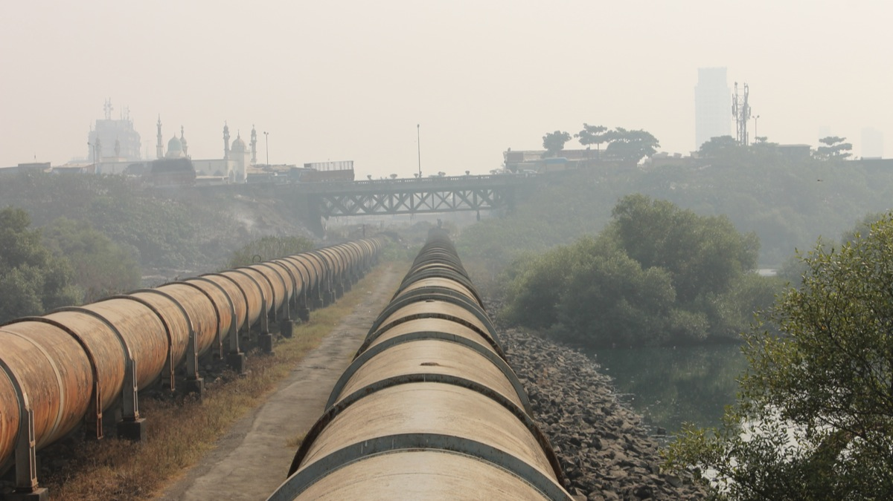
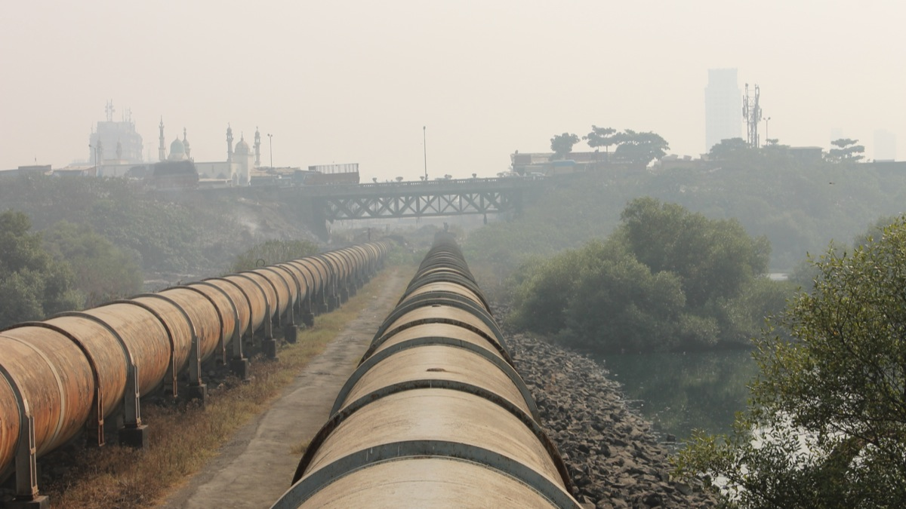
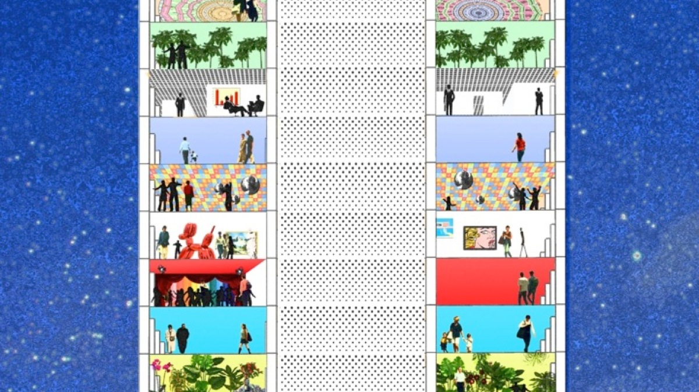
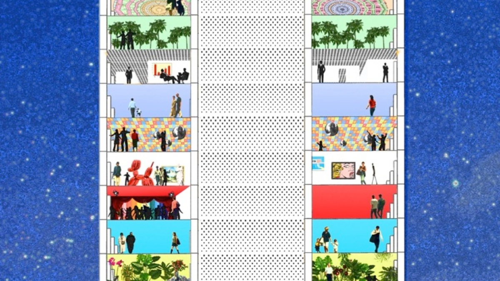

Originally conceived for safety, vehicle horns have become a top sound pollution concern in cities. Today, although honking is illegal in most cities around the world, enforcing anti-honking laws has proven difficult. In Mumbai, honking substitutes as a turn signal or serves as an all-purpose form of communication for drivers, and is ubiquitous at all hours. Even when they have no apparent reason to do so, Mumbaikar drivers honk. In 2008, taxi drivers in Mumbai took an oath not to honk, with little to no effect.
In a conversation about Mumbai’s city issues, cricket player Sachin Tendulkar suggested a 10,000-honk rule that would allot every car only 10,000 honks after its time of purchase; the regulation would control sound pollution in Mumbai’s streets and could fund urban noise-reduction projects: drivers who needed more than 10,000 honks would have to purchase them from the government.


 



 
